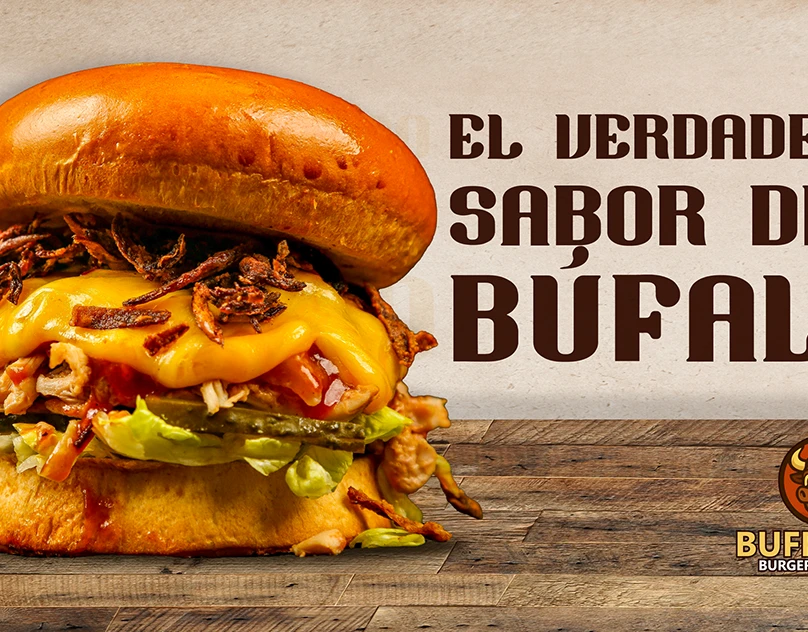
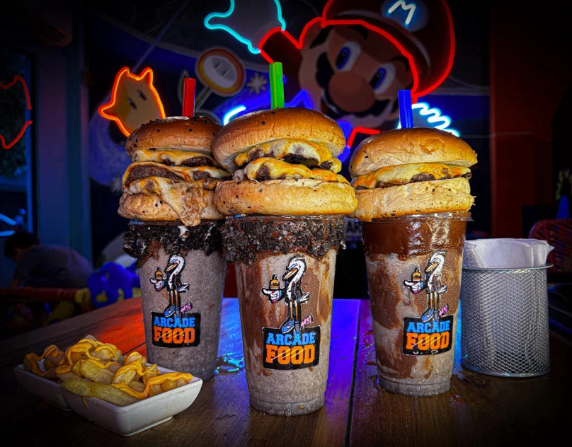
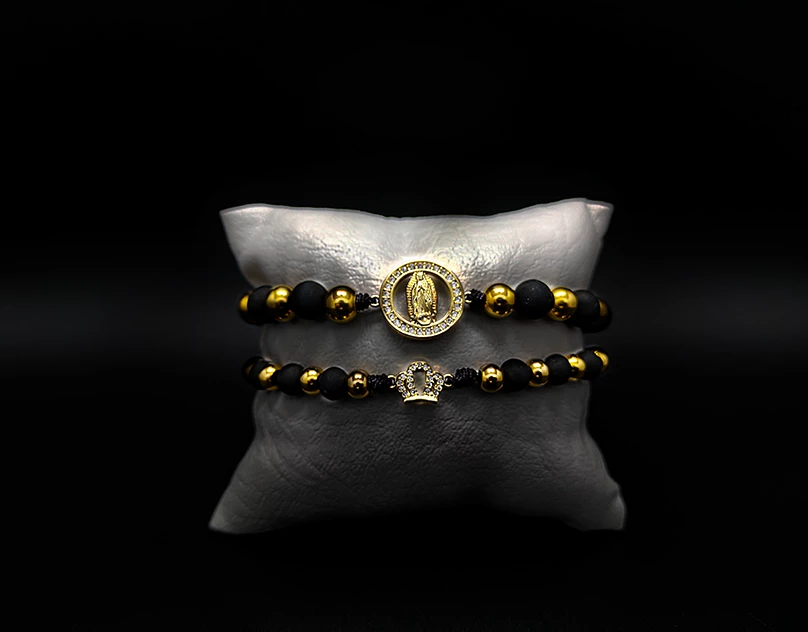

Identidad impresaKHALOPresentación y bono regalo
Identidad impresaKHALOPresentación y bono regaloTrabajo publicado y verificable
Portafolio visual de CRK Publicity
Una selección de diseño gráfico, ilustración, fotografía y producción visual. Los proyectos con enlace abren su publicación original en Behance.
Diseño e ilustración
Proyectos publicados en Behance
Cada tarjeta enlaza a la página externa del proyecto para que puedas revisar su procedencia.
 Campaña visualSalto de FeVer en Behance →
Campaña visualSalto de FeVer en Behance →

Redes socialesImagen para redesVer en Behance → IlustraciónIlustraciones ProcreateVer en Behance →
IlustraciónIlustraciones ProcreateVer en Behance →
 IlustraciónFrog ProcreateVer en Behance →
IlustraciónFrog ProcreateVer en Behance →

Diseño publicitarioFoodVer en Behance → VolanteFlyer FoodVer en Behance →
VolanteFlyer FoodVer en Behance →
 CampañaTemporada escolarVer en Behance →
CampañaTemporada escolarVer en Behance →
 Redes socialesFlyers para redesVer en Behance →
Redes socialesFlyers para redesVer en Behance →
 Diseño gráfico20 de JulioVer en Behance →
Diseño gráfico20 de JulioVer en Behance →
 VolanteColección gráficaVer en Behance →
VolanteColección gráficaVer en Behance →
 FotografíaFoto de productoVer en Behance →
FotografíaFoto de productoVer en Behance →

FotografíaJewelVer en Behance →Producción visual
Piezas del archivo de CRK Publicity
Muestras fotográficas organizadas por tipo de producto, sin atribuir resultados comerciales.
Identidad impresaKHALOPresentación y bono regalo SeñalizaciónDream ShopAviso exterior
SeñalizaciónDream ShopAviso exterior Señalización iluminadaSR. DOGAplicación en fachada
Señalización iluminadaSR. DOGAplicación en fachadaUn proyecto propio
Cuéntanos qué necesitas comunicar
Comparte el tipo de pieza, el objetivo, los formatos y el material que ya tienes.
Explora por servicio